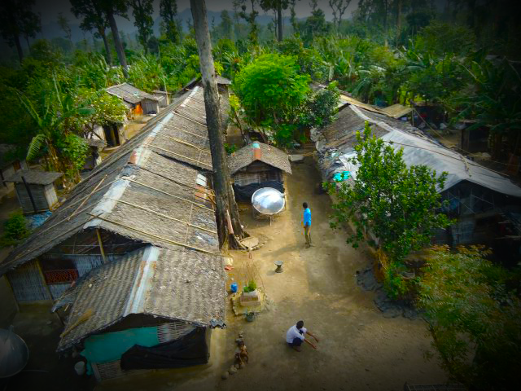

Bhutanese Refugees of Nepali Descent
Today’s Bhutanese refugees are descendants of a group of Nepalese migrants who traveled to Bhutan in the late 1800’s in search of better farmland. Eventually the migrants settled in a low-lying, southern region which was infested with malarial mosquitoes and thus “shunned by the Druk Buddhist majority.” After several generations, the group became known as the Lhotsampas, or, “People of the South.” They maintained a peaceful and isolated lifestyle which allowed them to preserve their highly distinctive Nepali language as well as their Hindu religion and unique culture.
After a century without conflict, tension arose due to the Druks’ fear that the Hindu minority were growing too quickly and that soon they would threaten the authority and dominance of the ruling Buddhists. Hostility grew and in the 1980’s the Bhutanese King initiated an era of Bhutanization, in which policies aimed at suppressing the Lhotsampas’ language, culture and religion were instituted and enforced. This was the beginning of the end for almost all of the Bhutanese of Nepali descent as non-Buddhist clothing and customs were illegalized, books were burned and Nepalese teachers were forced out of their jobs.
The Lhotsampas fought back by organizing politically and holding large protests which led to violent clashes with the police. Other, smaller Bhutanese minorities joined the Lhotsampas in fighting against the Druk Buddhists. Activists were tortured and their property was destroyed. The violence culminated in December of 1990 when it was announced that any Lhotsampas who could not prove that they had lived in Bhutan since 1958 must leave immediately. Soon a full fledged forced expulsion was taking place. In order to cover up their tracks, the Buddhist regime forced victims to sign “voluntary migration certificates.” Tens of thousands fled. A small number escaped to the Northern Indian state of West Bengal, while the majority fled to Nepal. Repatriation to Bhutan was deemed unfeasible, after several high profile talks between the Nepalese and Bhutanese governments did not heed any results. As of 2014, the Bhutanese government has not repatriated a single refugee. Local integration was also deemed unfeasible because the Nepali government refuses to allow the refugees freedom of movement and the right to employment. In 2007, there were approximately 107,000 Bhutanese refugees living in seven camps in eastern Nepal.
In 2009, the United States offered to resettle 70,000 of these refugees. Since resettlement began, several camps have closed and others have merged together. With the help of organizations like NICE, these wonderful people are being given a chance to start over.